规定初始像素覆盖已通过独立数据验收，完整12步与物理安全未通过。Prescribed initial pixel coverage passes the independent DATA audit; full12-step and physical acceptance remain incomplete. Original1280×720; no edits/crop. Every image below is INITIAL, not micro1/final.
{"seed": 0, "proposal_id": 2236, "global_id": 8380, "family": 0}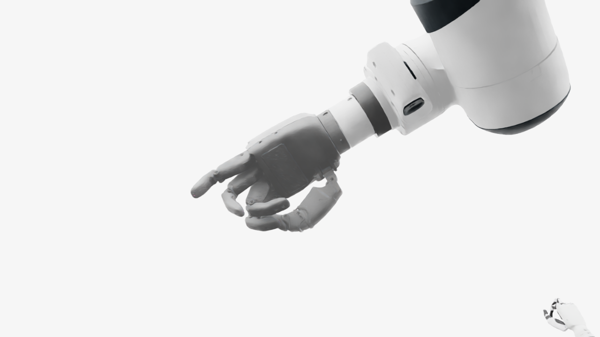
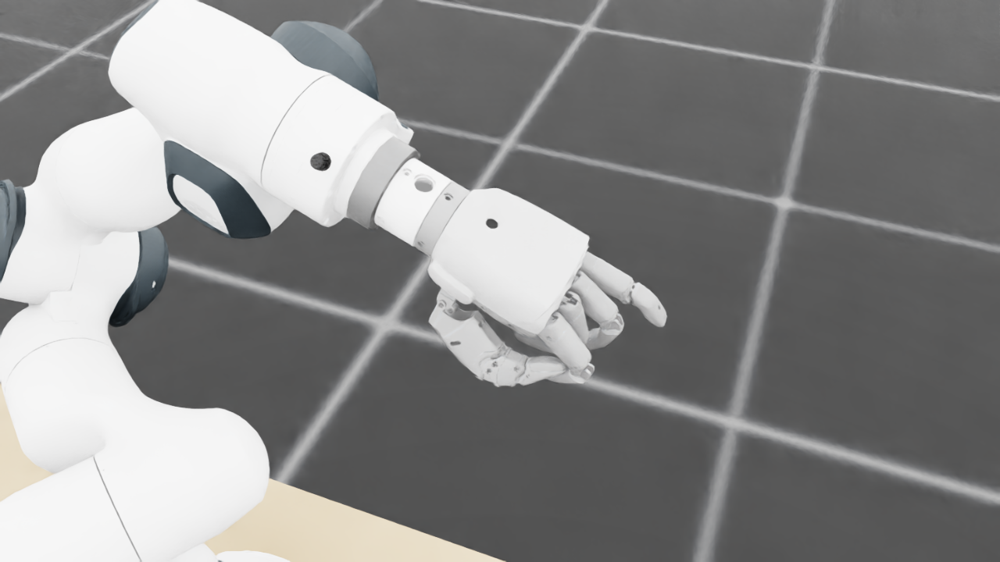
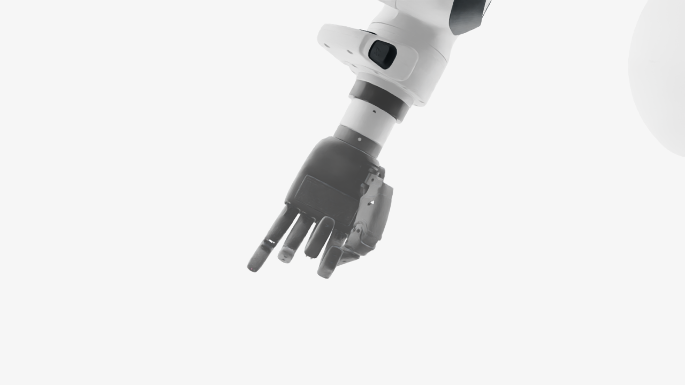
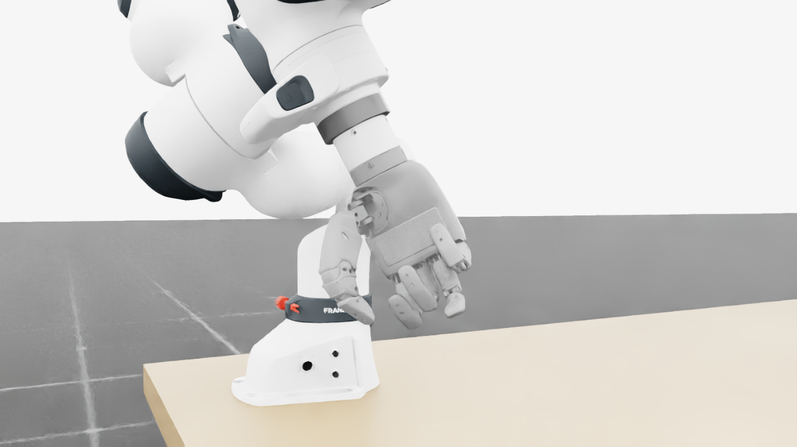
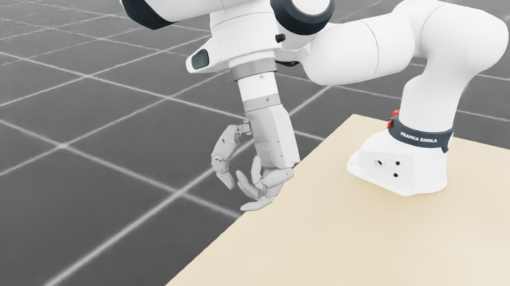
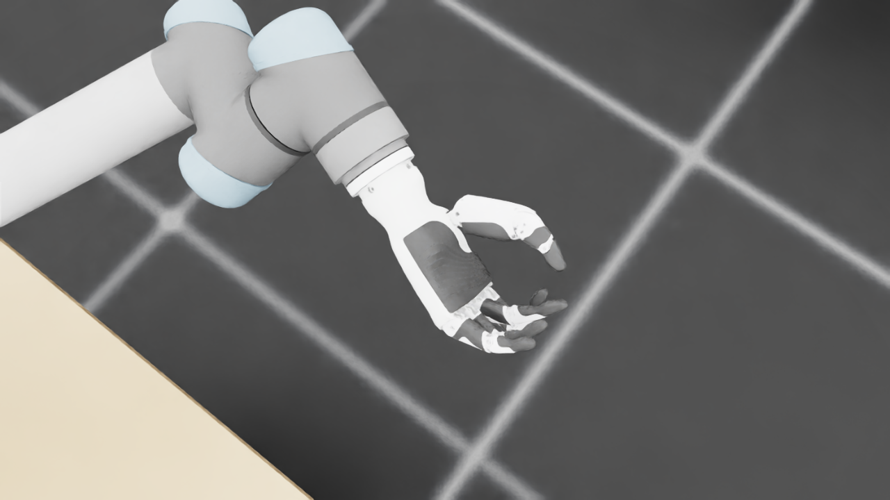
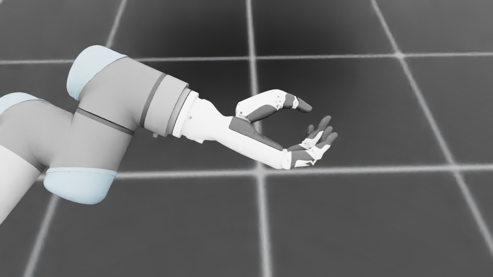
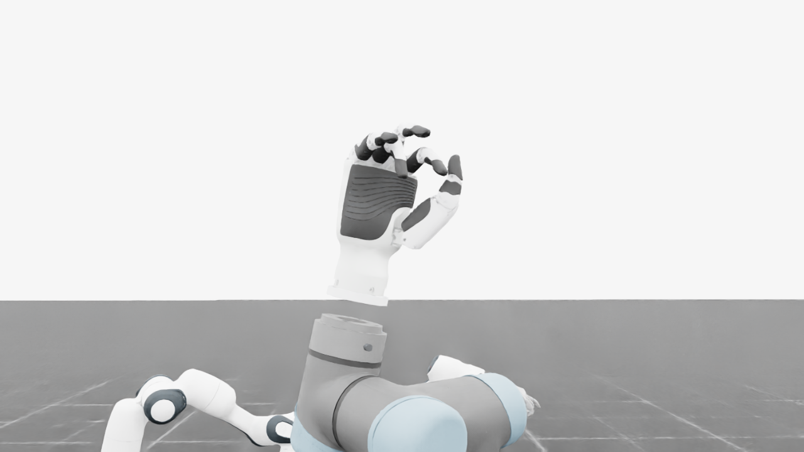
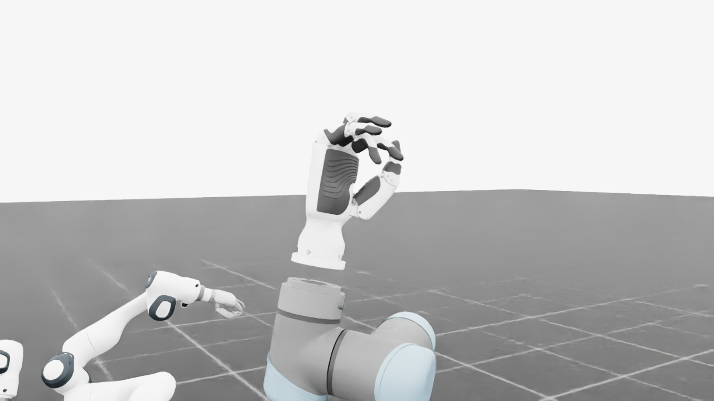
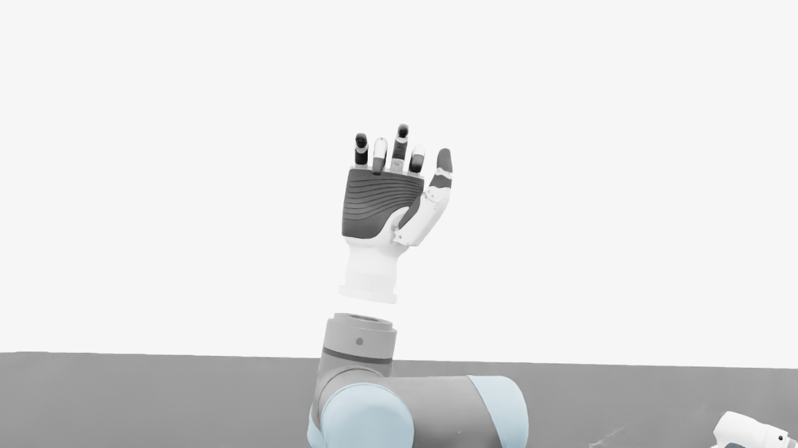
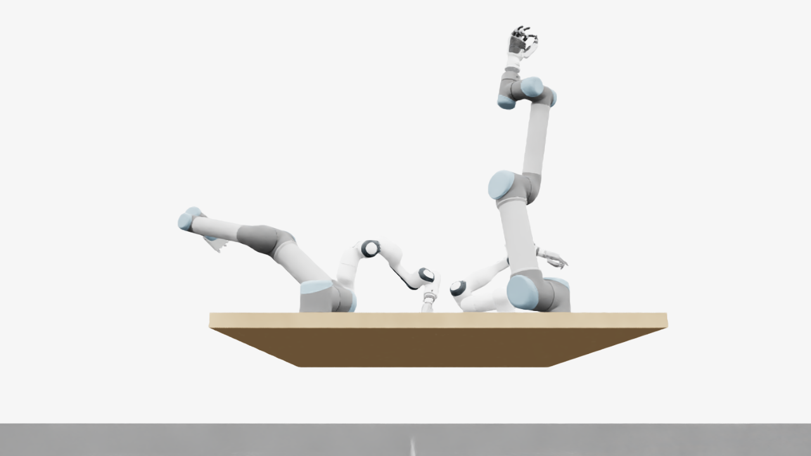
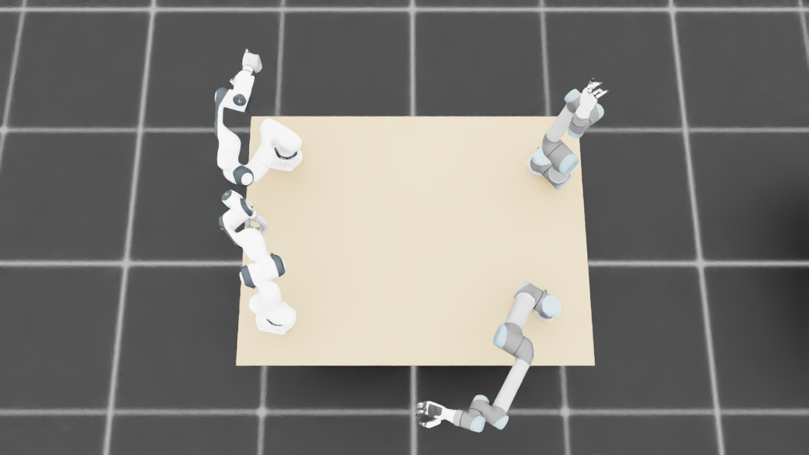
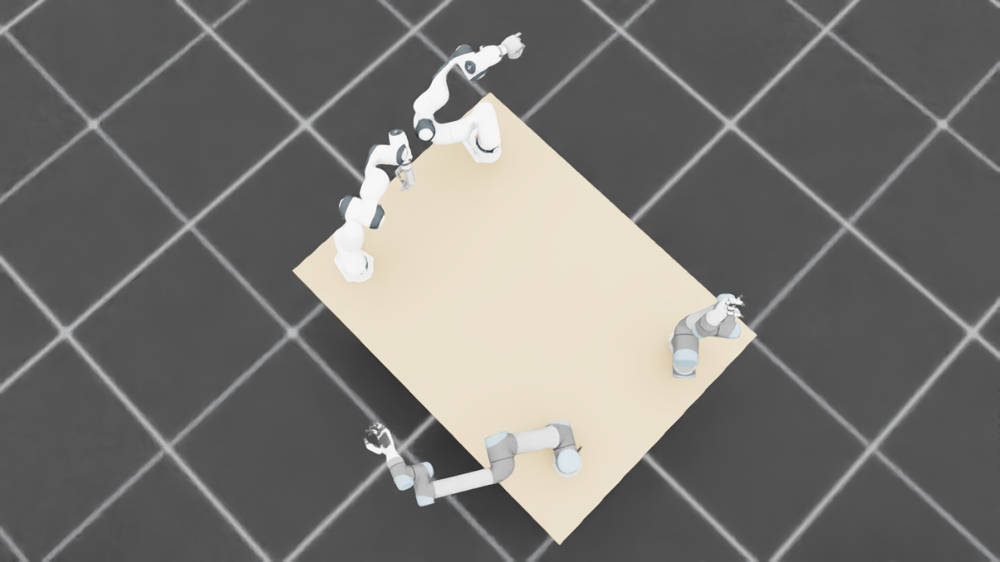
{
"qualified": true,
"arms": {
"F_L": {
"qualified": true,
"palm_visual_peak_pixels": 28250,
"finger_family_peak_pixels": {
"thumb": 8980,
"index": 3494,
"middle": 4450,
"ring": 3919,
"little": 4672
},
"per_native_body_peak_pixels": {
"/World/envs/env_0/F_L/f2_hand/left_hand_base": 34260,
"/World/envs/env_0/F_L/f2_hand/left_index_1": 2757,
"/World/envs/env_0/F_L/f2_hand/left_middle_1": 1922,
"/World/envs/env_0/F_L/f2_hand/left_pinky_1": 2718,
"/World/envs/env_0/F_L/f2_hand/left_ring_1": 2336,
"/World/envs/env_0/F_L/f2_hand/left_thumb_1": 670,
"/World/envs/env_0/F_L/f2_hand/left_index_2": 1883,
"/World/envs/env_0/F_L/f2_hand/left_middle_2": 2528,
"/World/envs/env_0/F_L/f2_hand/left_pinky_2": 1954,
"/World/envs/env_0/F_L/f2_hand/left_ring_2": 1583,
"/World/envs/env_0/F_L/f2_hand/left_thumb_2": 5389,
"/World/envs/env_0/F_L/f2_hand/left_thumb_3": 2170,
"/World/envs/env_0/F_L/f2_hand/left_thumb_4": 1565
},
"native_body_visibility_gaps": [],
"all_native_hand_bodies_observed": true,
"full_mesh_coverage_certified": false,
"all_recorded_attempt_peak": {
"qualified": false,
"palm_visual_peak_pixels": 28250,
"finger_family_peak_pixels": {
"thumb": 8980,
"index": 3494,
"middle": 4450,
"ring": 3993,
"little": 5262
},
"per_native_body_peak_pixels": {
"/World/envs/env_0/F_L/f2_hand/left_hand_base": 34260,
"/World/envs/env_0/F_L/f2_hand/left_index_1": 2757,
"/World/envs/env_0/F_L/f2_hand/left_middle_1": 1922,
"/World/envs/env_0/F_L/f2_hand/left_pinky_1": 3309,
"/World/envs/env_0/F_L/f2_hand/left_ring_1": 2336,
"/World/envs/env_0/F_L/f2_hand/left_thumb_1": 858,
"/World/envs/env_0/F_L/f2_hand/left_index_2": 1883,
"/World/envs/env_0/F_L/f2_hand/left_middle_2": 2528,
"/World/envs/env_0/F_L/f2_hand/left_pinky_2": 1954,
"/World/envs/env_0/F_L/f2_hand/left_ring_2": 2138,
"/World/envs/env_0/F_L/f2_hand/left_thumb_2": 5389,
"/World/envs/env_0/F_L/f2_hand/left_thumb_3": 2170,
"/World/envs/env_0/F_L/f2_hand/left_thumb_4": 1565
},
"native_body_visibility_gaps": [],
"all_native_hand_bodies_observed": true,
"full_mesh_coverage_certified": false,
"qualification": false
},
"attempts": 4,
"decoded": 4
},
"F_R": {
"qualified": true,
"palm_visual_peak_pixels": 18016,
"finger_family_peak_pixels": {
"thumb": 9863,
"index": 4867,
"middle": 3362,
"ring": 2804,
"little": 4568
},
"per_native_body_peak_pixels": {
"/World/envs/env_0/F_R/f2_hand/right_hand_base": 29043,
"/World/envs/env_0/F_R/f2_hand/right_index_1": 2909,
"/World/envs/env_0/F_R/f2_hand/right_middle_1": 1001,
"/World/envs/env_0/F_R/f2_hand/right_pinky_1": 2772,
"/World/envs/env_0/F_R/f2_hand/right_ring_1": 1640,
"/World/envs/env_0/F_R/f2_hand/right_thumb_1": 779,
"/World/envs/env_0/F_R/f2_hand/right_index_2": 1958,
"/World/envs/env_0/F_R/f2_hand/right_middle_2": 2361,
"/World/envs/env_0/F_R/f2_hand/right_pinky_2": 2187,
"/World/envs/env_0/F_R/f2_hand/right_ring_2": 1816,
"/World/envs/env_0/F_R/f2_hand/right_thumb_2": 5015,
"/World/envs/env_0/F_R/f2_hand/right_thumb_3": 2538,
"/World/envs/env_0/F_R/f2_hand/right_thumb_4": 1886
},
"native_body_visibility_gaps": [],
"all_native_hand_bodies_observed": true,
"full_mesh_coverage_certified": false,
"all_recorded_attempt_peak": {
"qualified": false,
"palm_visual_peak_pixels": 25724,
"finger_family_peak_pixels": {
"thumb": 9863,
"index": 4867,
"middle": 3393,
"ring": 2804,
"little": 4568
},
"per_native_body_peak_pixels": {
"/World/envs/env_0/F_R/f2_hand/right_hand_base": 31496,
"/World/envs/env_0/F_R/f2_hand/right_index_1": 2909,
"/World/envs/env_0/F_R/f2_hand/right_middle_1": 1227,
"/World/envs/env_0/F_R/f2_hand/right_pinky_1": 2772,
"/World/envs/env_0/F_R/f2_hand/right_ring_1": 1640,
"/World/envs/env_0/F_R/f2_hand/right_thumb_1": 779,
"/World/envs/env_0/F_R/f2_hand/right_index_2": 1958,
"/World/envs/env_0/F_R/f2_hand/right_middle_2": 2361,
"/World/envs/env_0/F_R/f2_hand/right_pinky_2": 2187,
"/World/envs/env_0/F_R/f2_hand/right_ring_2": 1816,
"/World/envs/env_0/F_R/f2_hand/right_thumb_2": 5015,
"/World/envs/env_0/F_R/f2_hand/right_thumb_3": 2538,
"/World/envs/env_0/F_R/f2_hand/right_thumb_4": 1886
},
"native_body_visibility_gaps": [],
"all_native_hand_bodies_observed": true,
"full_mesh_coverage_certified": false,
"qualification": false
},
"attempts": 5,
"decoded": 5
},
"U_L": {
"qualified": true,
"palm_visual_peak_pixels": 12718,
"finger_family_peak_pixels": {
"thumb": 9646,
"index": 1605,
"middle": 3121,
"ring": 2564,
"little": 5029
},
"per_native_body_peak_pixels": {
"/World/envs/env_0/U_L/wrist_3_link": 36353,
"/World/envs/env_0/U_L/left_index_1": 1007,
"/World/envs/env_0/U_L/left_little_1": 3245,
"/World/envs/env_0/U_L/left_middle_1": 1441,
"/World/envs/env_0/U_L/left_ring_1": 1546,
"/World/envs/env_0/U_L/left_thumb_1": 244,
"/World/envs/env_0/U_L/left_index_2": 612,
"/World/envs/env_0/U_L/left_little_2": 1784,
"/World/envs/env_0/U_L/left_middle_2": 2100,
"/World/envs/env_0/U_L/left_ring_2": 1018,
"/World/envs/env_0/U_L/left_thumb_2": 5937,
"/World/envs/env_0/U_L/left_thumb_3": 2349,
"/World/envs/env_0/U_L/left_thumb_4": 1125
},
"native_body_visibility_gaps": [],
"all_native_hand_bodies_observed": true,
"full_mesh_coverage_certified": false,
"all_recorded_attempt_peak": {
"qualified": true,
"palm_visual_peak_pixels": 12718,
"finger_family_peak_pixels": {
"thumb": 9646,
"index": 1605,
"middle": 3121,
"ring": 2564,
"little": 5029
},
"per_native_body_peak_pixels": {
"/World/envs/env_0/U_L/wrist_3_link": 36353,
"/World/envs/env_0/U_L/left_index_1": 1007,
"/World/envs/env_0/U_L/left_little_1": 3245,
"/World/envs/env_0/U_L/left_middle_1": 1441,
"/World/envs/env_0/U_L/left_ring_1": 1546,
"/World/envs/env_0/U_L/left_thumb_1": 244,
"/World/envs/env_0/U_L/left_index_2": 612,
"/World/envs/env_0/U_L/left_little_2": 1784,
"/World/envs/env_0/U_L/left_middle_2": 2100,
"/World/envs/env_0/U_L/left_ring_2": 1018,
"/World/envs/env_0/U_L/left_thumb_2": 5937,
"/World/envs/env_0/U_L/left_thumb_3": 2349,
"/World/envs/env_0/U_L/left_thumb_4": 1125
},
"native_body_visibility_gaps": [],
"all_native_hand_bodies_observed": true,
"full_mesh_coverage_certified": false,
"qualification": false
},
"attempts": 3,
"decoded": 3
},
"U_R": {
"qualified": true,
"palm_visual_peak_pixels": 10309,
"finger_family_peak_pixels": {
"thumb": 6853,
"index": 1847,
"middle": 1609,
"ring": 1955,
"little": 2759
},
"per_native_body_peak_pixels": {
"/World/envs/env_0/U_R/wrist_3_link": 29264,
"/World/envs/env_0/U_R/right_index_1": 838,
"/World/envs/env_0/U_R/right_little_1": 1721,
"/World/envs/env_0/U_R/right_middle_1": 1104,
"/World/envs/env_0/U_R/right_ring_1": 792,
"/World/envs/env_0/U_R/right_thumb_1": 285,
"/World/envs/env_0/U_R/right_index_2": 1077,
"/World/envs/env_0/U_R/right_little_2": 1038,
"/World/envs/env_0/U_R/right_middle_2": 1264,
"/World/envs/env_0/U_R/right_ring_2": 1163,
"/World/envs/env_0/U_R/right_thumb_2": 4146,
"/World/envs/env_0/U_R/right_thumb_3": 1705,
"/World/envs/env_0/U_R/right_thumb_4": 848
},
"native_body_visibility_gaps": [],
"all_native_hand_bodies_observed": true,
"full_mesh_coverage_certified": false,
"all_recorded_attempt_peak": {
"qualified": false,
"palm_visual_peak_pixels": 10309,
"finger_family_peak_pixels": {
"thumb": 7298,
"index": 2567,
"middle": 2524,
"ring": 1955,
"little": 2759
},
"per_native_body_peak_pixels": {
"/World/envs/env_0/U_R/wrist_3_link": 31278,
"/World/envs/env_0/U_R/right_index_1": 1843,
"/World/envs/env_0/U_R/right_little_1": 1721,
"/World/envs/env_0/U_R/right_middle_1": 1402,
"/World/envs/env_0/U_R/right_ring_1": 792,
"/World/envs/env_0/U_R/right_thumb_1": 285,
"/World/envs/env_0/U_R/right_index_2": 1077,
"/World/envs/env_0/U_R/right_little_2": 1038,
"/World/envs/env_0/U_R/right_middle_2": 1291,
"/World/envs/env_0/U_R/right_ring_2": 1163,
"/World/envs/env_0/U_R/right_thumb_2": 4365,
"/World/envs/env_0/U_R/right_thumb_3": 1877,
"/World/envs/env_0/U_R/right_thumb_4": 872
},
"native_body_visibility_gaps": [],
"all_native_hand_bodies_observed": true,
"full_mesh_coverage_certified": false,
"qualification": false
},
"attempts": 6,
"decoded": 6
}
},
"wide": {
"qualified": true,
"per_native_object_peak_pixels": {
"/World/envs/env_0/F_L/fr3_link0": 1062,
"/World/envs/env_0/F_L/fr3_link1": 1430,
"/World/envs/env_0/F_L/fr3_link2": 2018,
"/World/envs/env_0/F_L/fr3_link3": 857,
"/World/envs/env_0/F_L/fr3_link4": 2007,
"/World/envs/env_0/F_L/fr3_link5": 2459,
"/World/envs/env_0/F_L/fr3_link6": 1428,
"/World/envs/env_0/F_L/fr3_link7": 386,
"/World/envs/env_0/F_L/fr3_link8": 58,
"/World/envs/env_0/F_L/f2_hand/left_hand_base": 603,
"/World/envs/env_0/F_L/f2_hand/left_index_1": 49,
"/World/envs/env_0/F_L/f2_hand/left_middle_1": 10,
"/World/envs/env_0/F_L/f2_hand/left_pinky_1": 17,
"/World/envs/env_0/F_L/f2_hand/left_ring_1": 11,
"/World/envs/env_0/F_L/f2_hand/left_thumb_1": 9,
"/World/envs/env_0/F_L/f2_hand/left_index_2": 35,
"/World/envs/env_0/F_L/f2_hand/left_middle_2": 8,
"/World/envs/env_0/F_L/f2_hand/left_pinky_2": 24,
"/World/envs/env_0/F_L/f2_hand/left_ring_2": 19,
"/World/envs/env_0/F_L/f2_hand/left_thumb_2": 99,
"/World/envs/env_0/F_L/f2_hand/left_thumb_3": 38,
"/World/envs/env_0/F_L/f2_hand/left_thumb_4": 24,
"/World/envs/env_0/F_R/fr3_link0": 941,
"/World/envs/env_0/F_R/fr3_link1": 1147,
"/World/envs/env_0/F_R/fr3_link2": 1034,
"/World/envs/env_0/F_R/fr3_link3": 2431,
"/World/envs/env_0/F_R/fr3_link4": 2534,
"/World/envs/env_0/F_R/fr3_link5": 1686,
"/World/envs/env_0/F_R/fr3_link6": 1370,
"/World/envs/env_0/F_R/fr3_link7": 363,
"/World/envs/env_0/F_R/fr3_link8": 87,
"/World/envs/env_0/F_R/f2_hand/right_hand_base": 364,
"/World/envs/env_0/F_R/f2_hand/right_index_1": 3,
"/World/envs/env_0/F_R/f2_hand/right_middle_1": 17,
"/World/envs/env_0/F_R/f2_hand/right_pinky_1": 52,
"/World/envs/env_0/F_R/f2_hand/right_ring_1": 2,
"/World/envs/env_0/F_R/f2_hand/right_thumb_1": 9,
"/World/envs/env_0/F_R/f2_hand/right_index_2": 14,
"/World/envs/env_0/F_R/f2_hand/right_middle_2": 19,
"/World/envs/env_0/F_R/f2_hand/right_pinky_2": 34,
"/World/envs/env_0/F_R/f2_hand/right_ring_2": 27,
"/World/envs/env_0/F_R/f2_hand/right_thumb_2": 87,
"/World/envs/env_0/F_R/f2_hand/right_thumb_3": 22,
"/World/envs/env_0/F_R/f2_hand/right_thumb_4": 20,
"/World/envs/env_0/U_L/base_link": 246,
"/World/envs/env_0/U_L/shoulder_link": 2935,
"/World/envs/env_0/U_L/upper_arm_link": 4968,
"/World/envs/env_0/U_L/forearm_link": 4901,
"/World/envs/env_0/U_L/wrist_1_link": 713,
"/World/envs/env_0/U_L/wrist_2_link": 1121,
"/World/envs/env_0/U_L/wrist_3_link": 1159,
"/World/envs/env_0/U_L/left_index_1": 26,
"/World/envs/env_0/U_L/left_little_1": 70,
"/World/envs/env_0/U_L/left_middle_1": 58,
"/World/envs/env_0/U_L/left_ring_1": 39,
"/World/envs/env_0/U_L/left_thumb_1": 8,
"/World/envs/env_0/U_L/left_index_2": 23,
"/World/envs/env_0/U_L/left_little_2": 45,
"/World/envs/env_0/U_L/left_middle_2": 57,
"/World/envs/env_0/U_L/left_ring_2": 45,
"/World/envs/env_0/U_L/left_thumb_2": 191,
"/World/envs/env_0/U_L/left_thumb_3": 79,
"/World/envs/env_0/U_L/left_thumb_4": 33,
"/World/envs/env_0/U_R/base_link": 246,
"/World/envs/env_0/U_R/shoulder_link": 1595,
"/World/envs/env_0/U_R/upper_arm_link": 11780,
"/World/envs/env_0/U_R/forearm_link": 4883,
"/World/envs/env_0/U_R/wrist_1_link": 1593,
"/World/envs/env_0/U_R/wrist_2_link": 1102,
"/World/envs/env_0/U_R/wrist_3_link": 1675,
"/World/envs/env_0/U_R/right_index_1": 74,
"/World/envs/env_0/U_R/right_little_1": 90,
"/World/envs/env_0/U_R/right_middle_1": 78,
"/World/envs/env_0/U_R/right_ring_1": 91,
"/World/envs/env_0/U_R/right_thumb_1": 25,
"/World/envs/env_0/U_R/right_index_2": 58,
"/World/envs/env_0/U_R/right_little_2": 59,
"/World/envs/env_0/U_R/right_middle_2": 70,
"/World/envs/env_0/U_R/right_ring_2": 63,
"/World/envs/env_0/U_R/right_thumb_2": 275,
"/World/envs/env_0/U_R/right_thumb_3": 91,
"/World/envs/env_0/U_R/right_thumb_4": 35,
"/World/envs/env_0/TableF": 92468,
"/World/envs/env_0/TableU": 94798
},
"arm_peak_pixels": {
"F_L": 12482,
"F_R": 11760,
"U_L": 13714,
"U_R": 23556
},
"table_peak_pixels": {
"TableF": 92468,
"TableU": 94798
},
"critical_body_peak_pixels": {
"/World/envs/env_0/U_L/forearm_link": 4901,
"/World/envs/env_0/U_L/wrist_2_link": 1121,
"/World/envs/env_0/U_R/forearm_link": 4883,
"/World/envs/env_0/U_R/wrist_2_link": 1102
}
},
"raw_attempt_count": 30,
"PNG_count": 30,
"angle_records": 30,
"max_actual_angle_identity_error_deg": 0.0,
"held_snapshot_checks": 242,
"universal_visibility_impossible": false,
"full_mesh_coverage_certified": false
}